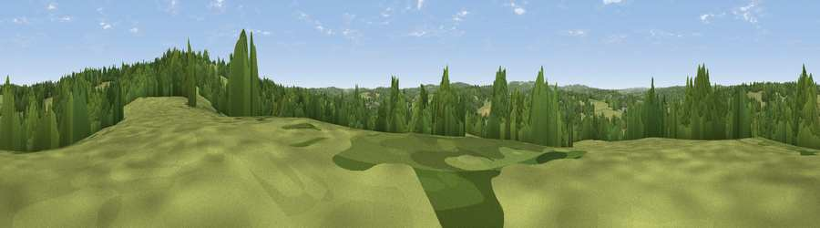

Viewpoint near Hurst Green
#41997 in England · top 78% of its area beats it · near Hurst GreenWhere it is
The exact computed spot (TQ 73075 25725). Click the marker for map links.
The view, rendered

A 360° render of this exact spot computed from the terrain model, tree cover and land cover — summer colours, afternoon light, calibrated against photographs of famous viewpoints. Real trees, hedges and buildings will differ in detail.
The panorama
Grey silhouette: terrain skyline in each direction (720 bearings, Earth curvature and refraction included). Dashed green: skyline with trees (+15 m) and buildings (+8 m) as obstacles. Blue strip: how far the ground is visible on each bearing.
Where the view opens
Wedge length = distance to the farthest visible ground on that bearing (vegetation-aware). Rings at 10, 25 and 50 km.
What fills the view
51% grassland · 40% woodland · 7% cropland · 1% built-up
Angular shares of the visible panorama (visual magnitude), not map area. Landscape diversity 0.41 (0–1 Shannon).
Key numbers
More beautiful places nearby
The staircase of upgrades: each row has a higher view potential than everything closer. Driving times are estimates from straight-line distance, calibrated against real road routing — check an actual route before setting out.
| Place | Direction | Drive | Score |
|---|---|---|---|
| Viewpoint near Hurst Green | E · 1 km | ~3 min | 46.7 |
| Silver Hill | E · 1 km | ~3 min | 54.9 |
| Viewpoint near Netherfield | SSW · 7 km | ~14 min | 64.5 |
| Brightling Obelisk [Brightling Down] | SW · 8 km | ~15 min | 69.1 |
| Viewpoint near Three Oaks | SSE · 16 km | ~29 min | 69.3 |
| Viewpoint near Guestling Green | SE · 18 km | ~32 min | 72.2 |
| Viewpoint near Fairlight | SE · 19 km | ~32 min | 74.7 |
| Viewpoint near Fairlight | SE · 19 km | ~33 min | 75.1 |
51.00488, 0.46549 · source: screening · position refined by local search. Computed location — check access rights before visiting.